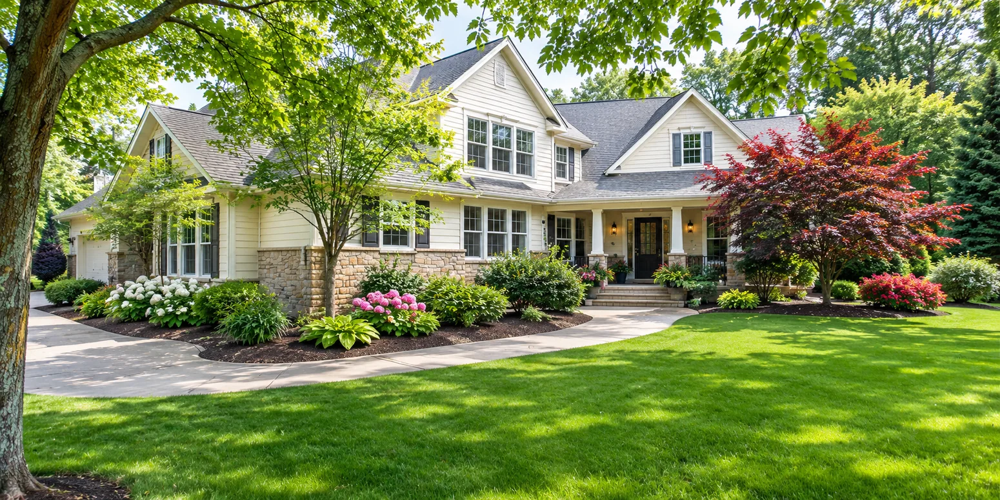

Snow Removal
Prepare your driveway, entryways, and access areas for winter weather. Ask about one-time clearing and seasonal arrangements, depending on provider offerings.
Call about snow removal
DuPage County, Illinois • Seasonal Property Care
Looking for help with a snowy driveway or winter property access? Learn what to ask about local snow removal and other seasonal outdoor care.
Call About Snow RemovalIndependent service-inquiry website • (630) 534-0189
Seasonal property needs
Explore common services people ask about when planning seasonal upkeep. Snow removal is our primary winter inquiry topic; other property-care topics are provided for general information.
Prepare your driveway, entryways, and access areas for winter weather. Ask about one-time clearing and seasonal arrangements, depending on provider offerings.
Call about snow removalLearn which questions to ask about trimming, overgrown branches, and seasonal yard upkeep. A qualified professional should assess the property and work.

Find useful information about mulch, landscape beds, and exterior upkeep for the warmer months.

Who we are
Winter can make ordinary property access difficult. This website helps residents think through snow-clearing needs before discussing options by telephone.
We are an independent referral and inquiry resource. We do not directly perform snow removal, landscaping, or tree work, and we are not connected to the former company that used this domain.
Snow depth, driveway dimensions, sidewalks, and service frequency can all affect what a provider may be able to offer. Have a few details ready when you call.
Call (630) 534-0189Before you call
These four topics can help keep your inquiry focused and make it easier to explain what kind of snow clearing you're looking for.
Consider the driveway length and width, slopes, parking areas, and any spots where snow piles up.
Identify sidewalks, front steps, ramps, and entrances that may need attention.
Explain whether you're asking about a single clearing or a recurring winter arrangement; availability varies.
Ask a provider how snowfall depth, scheduling, service areas, and pricing are determined.
Frequently asked questions
Service details are set by independent providers. These answers can help you prepare a practical inquiry.
Yes, you can describe your interest in a one-time visit. Whether that service is offered, the price, and its timing would be determined by an available independent provider.
Not necessarily. Mention any sidewalks, steps, ramps, or other access areas during your inquiry so those needs can be discussed.
Pricing may depend on property size, site conditions, snowfall accumulation, frequency, and local provider terms. This website does not set prices or issue quotes.
Coverage depends on each independent provider. When calling, give your town and ZIP code so the inquiry can be evaluated against any available service area.
Calls may be handled through voicemail while service inquiries are reviewed. Where an appropriate referral arrangement exists, relevant inquiry details may be passed to an independent provider. Calling does not guarantee scheduling or service.
No. This is an independent information and telephone-inquiry website. Any actual work, prices, and arrangements are the responsibility of independent service providers.
DuPage County, Illinois
Homeowners may be looking into snow removal in communities such as Wheaton, Naperville, Downers Grove, Lombard, Elmhurst, and Glen Ellyn.
These are geographic examples, not a guarantee of provider coverage. When calling, mention your location and the kind of work you need.
Have your town, driveway size, and the areas that need clearing in mind. Call to leave an inquiry about snow removal options.
Call (630) 534-0189Independent inquiry and referral resource. Actual service arrangements, if any, are made with third-party providers.